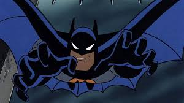

Batman the animated series is a popular television show that aired in the 1990s. It is known for its dark and gritty tone, as well as its unique art style. The show follows the adventures of Batman as he fights crime in Gotham City, along with his allies such as Robin and Batgirl. The show also features a wide range of villains, including the Joker, Harley Quinn, and the Penguin. Overall, Batman the animated series is a beloved show that has had a lasting impact on popular culture.
Batman the animated series

Batman the animated series
Batman the animated series is a popular television show that aired in the 1990s. It is known for its dark and gritty tone, as well as its unique art style. The show follows the adventures of Batman as he fights crime in Gotham City, along with his allies such as Robin and Batgirl. The show also features a wide range of villains, including the Joker, Harley Quinn, and the Penguin. Overall, Batman the animated series is a beloved show that has had a lasting impact on popular culture.
This is a brief introduction to the show and its significance in popular culture. The show has been praised for its storytelling, character development, and animation style, and it continues to be a fan favorite among both children and adults. Whether you're a longtime fan or new to the show, Batman the animated series is definitely worth checking out.
two face is one of the most iconic villains in the Batman universe, known for his dual personality and tragic backstory. He was once a respected district attorney named Harvey Dent, but after a traumatic event that left half of his face scarred, he became the criminal mastermind known as Two Face. He is often depicted as a ruthless and unpredictable villain, with a penchant for flipping a coin to make decisions. Two Face has been featured in various Batman media, including comics, television shows, and movies, and remains one of the most memorable characters in the Batman franchise.